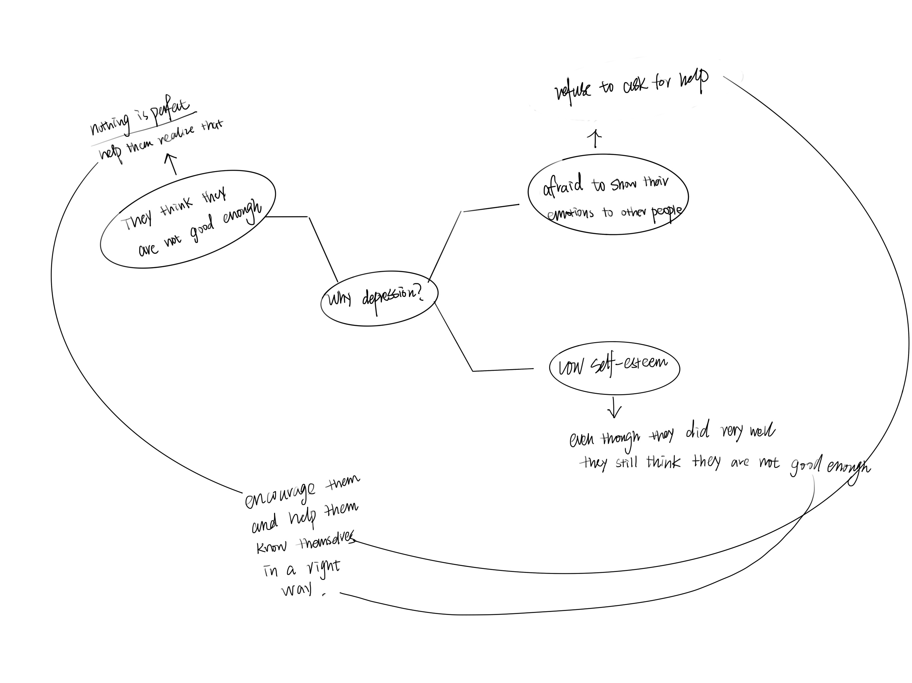
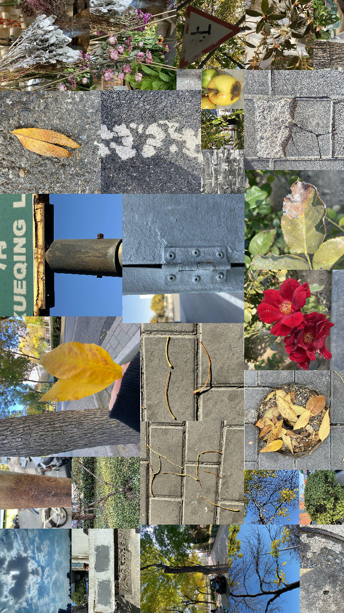

How to help people with depression get to know themselves better？
Inspiration
A post-90s photographer took pictures of girls trapped in depression for free and try to recorded their stories.
Every girl is beautiful and unique. They just didn't realize it.
Brainstorming

By analyzing the reasons behind depression, I found that many depression patients tend to be perfectionists. No matter what achievements they have achieved, they still feel that they are not good enough and worry that their
imperfections will cause others trouble.
But...nothing is perfect. I want a find a way to help them realize that they can be imperfect because the world is imperfect.
The development

To find inspirations, I started to go out and try to observe some interesting stuff near my home; I found a lot of defective items, such as spotted leaves, rusty road signs, cracked stones, wilted flowers...
I took many images of them, and then I just realized these deficiencies actually make them unique.
These are the things we can see every day, but we have never had a chance to look at them and find out the beauty of them. Our world is made up by imperfections.
prototype
When I passed by the glass door, an idea ran into my mind. I want to make an interactive glass screen that when people walk by, there will be images and texts coming out.
Give them an opportunity to communicate with themselves and let them re-examine themselves in an interactive way. I want to use this way to encourage them and tell them, "You can be imperfect".
Because of the technical problem, I only make a video prototype here to show my idea's simple process.